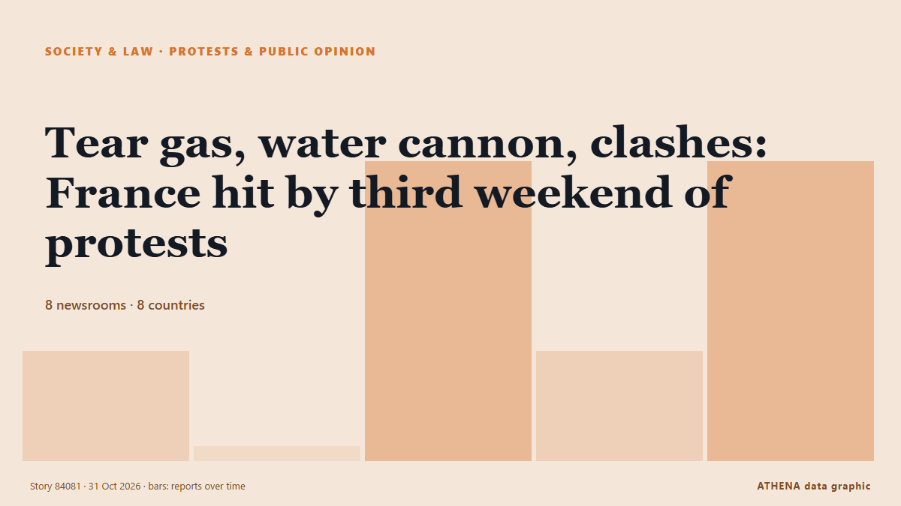

المجتمع والقانون والسياسات العامة
تُعرض العناوين بالإنجليزية كما نُشرت.

الاحتجاجات والرأي العامTear gas, water cannon, clashes: France hit by third weekend of protests
Nationwide protests in France attracted an estimated 320,000 participants voicing concerns over rising living costs and government policies. من Times of India
| 18 أكتوبر | 30 |
|---|---|
| 19 أكتوبر | 145 |
| 20 أكتوبر | 45 |
| 21 أكتوبر | 115 |
| 22 أكتوبر | 222 |
| 23 أكتوبر | 188 |
| 24 أكتوبر | 120 |
| 25 أكتوبر | 131 |
| 26 أكتوبر | 317 |
| 27 أكتوبر | 308 |
| 28 أكتوبر | 286 |
| 29 أكتوبر | 254 |
| 30 أكتوبر | 272 |
| 31 أكتوبر | 78 |
Poland FM: Tribunal move 'not elegant,' but necessary
Poland's Foreign Minister Radoslaw Sikorski stated on Saturday that last night's police deployment at the Polish Constitutional Tribunal in Warsaw was "not elegant," but still better than an… من AzerNews
Gen Z protests reach Germany as over 160,000 expected at Halloween rallies
Demands include opposing compulsory military service and investing in education amid rising costs. من The Straits Times
Polish riot police deployed after court chief suspended
The court frequently ruled in favour of Polish legislation over European Union law. من Euractiv
DSI probes relatives of Chabad leader Kantor and 19 firms
Relatives of the Chabad network’s leader in Thailand, 19 companies linked to him and his land holdings are now under investigation, after the government revoked his Thai citizenship. من The Thaiger
Third weekend of protests in France as youth-led rallies sweep Europe
The Interior Ministry told reporters that 70,000 people are estimated to have turned out for the main protest in Paris. من The Irish News (Belfast)
Flash: At least 7 injured in California shooting -- media
At least 3 victims remain in critical condition following shooting at Fairfield mall, as police search for suspect. من Express Tribune
New York state police to take over sexual assault complaints at Cornell University
New York state police will take over future sexual assault investigations at Cornell University, Governor Kathy Hochul said… من BusinessWorld
Probe into Andrew and Epstein’s Balmoral visit in ‘very early stages’ – police
Pictures previously released by the Department of Justice in the US appear to show Andrew and Epstein on a shooting trip at the estate. من Evening Standard (London)
Seoul fears being sidelined as US reaches out to North Korea
With ties between South Korea and the Trump administration strained, the South Korean government worries that Donald Trump's pursuit of a diplomatic breakthrough with Kim Jong Un may come at Seoul's… من DW English
Fears of violence as France braces for Halloween protests
France will deploy some 70,000 police officers in Paris and other cities ahead of a new round of nationwide protests on Saturday, with Interior Minister Laurent Nuñez warning of a "very high risk of… من France 24 English
'We don't work for war': Dockworkers strike at 113 ports across 5 continents
Strikes take place in countries including Greece, France, Italy, India, Türkiye, Germany, opposing arms transfers to Israel. من Anadolu Agency (English)
Poland's president returns as court crisis escalates
Polish President Karol Nawrocki turned back to Poland while en route to Senegal after a far-right ally was suspended as head of the country's top court. من RTÉ News
Humanitarian aid being delivered to Oleshky, 25 buses with 750 seats ready for evacuation – Lubinets
Ukraine's Human Rights Commissioner, Dmytro Lubinets, said that 25 buses with a total capacity of 750 seats had been prepared to evacuate residents of Oleshky, along with ambulances for people with… من Ukrinform (English)
UN Refugee Agency Says 9 Million Need Extra Winter Help
The UN refugee agency highlights the need for extra winter assistance for nine million people across Ukraine, Syria, Lebanon, and Afghanistan, seeking $50 million in donations. من Arab News
South Korea seeks criminal charges, 3-year exam ban for cheating with AI glasses
Authorities are stepping up efforts to tackle cheating involving the devices following a series of incidents this year. من CNA (Channel NewsAsia)
Iran court sentences award-winning filmmaker Jafar Panahi to 5 years in prison
The 66-year-old won the top prize in the 2025 Cannes film festival for It Was Just An Accident. من The Straits Times
A helicopter with the EU force in Bosnia crashes, reportedly killing 3 and injuring 12
A Italian helicopter of the European Union peacekeeping force in Bosnia has crashed in the country’s north. من ABC News (International)
Plaka Explosion: Three Suspects Linked to 80 Police Cases
Three men arrested over the Plaka explosion that killed six people are linked to nearly 80 previous police cases, according to Greek reports. من Greek City Times
Mushroom killer Erin Patterson emotionless as appeal dismissed
Mushroom killer Erin Patterson is likely to die behind bars after Victoria’s Court of Appeal quashed her bid to overturn her triple murder conviction. من Sydney Morning Herald
Thousands of students and workers protest in Italy under heavy security
Thousands of students and workers took to the streets across Italy on Friday, calling for more school funding and relief from the soaring cost of living, amid a high police presence to avert possible… من The Local Italy
Spain’s transport minister refuses to resign over Toledo train crash as elections loom
Oscar Puente ruled out stepping down at a press conference at the Transport Ministry in Madrid on Friday. من The Olive Press
3 dead in rock spire collapse at tourist site in Turkiye's Cappadocia
A landslide triggered by heavy rainfall caused a rock spire to collapse in Turkiye’s Unesco World Heritage-listed Cappadocia region on Thursday, bringing the death toll to three, officials said. من Dawn
Spain working 'tirelessly' to identify train crash dead: PM
Relatives of the victims have endured an agonising wait for news as rescue crews sift through the wreckage of tangled metal and bodies are examined in morgues. من CNA (Channel NewsAsia)
U.K. police share update on probe into claims against Meghan Markle’s father
The Metropolitan Police acknowledged receiving a letter in 2019 regarding accusations about Meghan Markle’s father but did not share this information with other law agencies. من Arab News
High-speed train collision in Spain: 68 dead, more than 100 injured
MADRID: At least 10 people have died after a major collision involving two high-speed passenger trains in the central Spanish province of Toledo.The accident prompted the suspensi... من Oman Observer
Abu Dhabi court jails 8 for life over arms supplies to Sudanese Army
Yasser Al Atta, Salah Gosh, Othman Al Zubair, five others sentenced to life imprisonment in arms trafficking, money laundering case. من Gulf News
Grieving Spain demands answers for latest rail disaster
One of Europe’s deadliest rail disasters this century struck south of Madrid on Wednesday morning, killing 69 people and injuring dozens more. من Free Malaysia Today
EU to slap new €2 fee on online shopping orders from outside Europe
The EU will charge an extra €2 "processing fee" on parcels imported into the European Union from Sunday November 1st in a bid to reduce the influx of cheap Chinese products bought on the internet. من The Local Austria
Ex-FBI officials charged with lying to Congress about Hunter Biden probe
Two former FBI officials are facing charges for lying to Congress about their involvement in the agency’s investigation into Hunter Biden’s laptop. من The Hill
Spain begins three days of mourning after train crash kills 69
The Portuguese Government has expressed its “deepest condolences” and “solidarity” to the Spanish authorities following a “tragic train accident” in the Toledo region that killed at least 30 people. من The Portugal News
Russell Brand denies all charges as he testifies at his rape and sex assault trial
The British actor-comedian acknowledged in a London court on Wednesday that he had been obsessed with sex as a younger man, but denied multiple charges of rape and sexual assault, saying the claims… من PBS NewsHour
Xi extends condolences over deadly train collision in Spain
Associated Press Of Pakistan PM expresses grief over devastating train collision in Spain ISLAMABAD, Oct 28 (APP): Prime Minister Muhammad Shehbaz Sharif, Wednesday, expressed his profound grief over… من APP (Associated Press of Pakistan)
New York state police to take over sexual assault complaints at Cornell
Sexual offence complaints normally fall under the jurisdiction of campus police. من The Straits Times
Ukrainian Delegation Heads Toward Oleshky for Aid Mission
A Ukrainian delegation led by Human Rights Commissioner Dmytro Lubinets set off toward Russian-occupied Oleshky on Thursday, Oct. من Kyiv Post